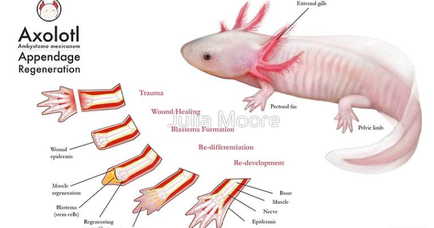
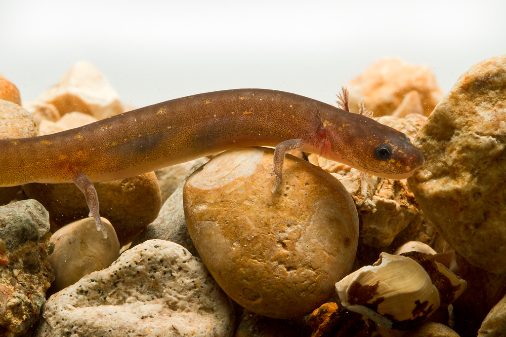

¿A qué se refiere organismo modelo?
Un organismo modelo (a menudo abreviado como modelo ) es una especie no humana que se estudia extensamente para comprender fenómenos biológicos particulares, con la expectativa de que los descubrimientos realizados en el organismo modelo proporcionen información sobre el funcionamiento de otros organismos. Los organismos modelo se utilizan ampliamente para investigar enfermedades humanas cuando la experimentación humana sería inviable o poco ética. Esta estrategia es posible gracias a la descendencia común de todos los organismos vivos y a la conservación de los procesos metabólicos y de desarrollo, vías y material genético a lo largo de la evolución.
Ejemplos

Ajolote como organismo modelo
Hoy en día, el ajolote todavía se utiliza en la investigación como organismo modelo, y se cría en cautiverio un gran número. Son especialmente fáciles de criar en comparación con otras salamandras de su familia, que rara vez se crían en cautividad debido a las exigencias de la vida terrestre. Una característica atractiva para la investigación es el embrión grande y fácil de manipular, que permite ver el desarrollo completo de un vertebrado. Los ajolotes se utilizan en estudios de defectos cardíacos debido a la presencia de un gen mutante que causa insuficiencia cardíaca en los embriones.
Dado que los embriones sobreviven casi hasta la eclosión sin función cardíaca, el defecto es muy observable. El axolotl también se considera un modelo animal ideal para el estudio del tubo neural cierre debido a las similitudes entre la placa neural humana y axolotl y la formación del tubo; El tubo neural del axolotl, a diferencia del de la rana, no está oculto bajo una capa de epitelio superficial. También hay mutaciones que afectan a otros sistemas de órganos, algunos de los cuales no están bien caracterizados y otros sí. La genética de las variantes de color del ajolote también se ha estudiado ampliamente.
Regeneración
La característica del axolotl que más llama la atención es su capacidad curativa: el axolotl no cicatriza dejando cicatrices y es capaz de regenerar todos los apéndices perdidos en un período de meses y, en ciertos casos, estructuras más vitales, como la cola. , extremidades, sistema nervioso central y tejidos del ojo y el corazón. Incluso pueden restaurar partes menos vitales de su cerebro. También pueden aceptar fácilmente trasplantes de otras personas, incluidos ojos y partes del cerebro, restaurando estos órganos extraños a su funcionalidad completa. En algunos casos, se sabe que los axolotl reparan una extremidad dañada, además de regenerar una adicional, terminando con un apéndice adicional que los hace atractivos para los dueños de mascotas como una novedad. En los individuos metamorfoseados, sin embargo, la capacidad de regeneración se ve muy disminuida. Por tanto, el axolotl se utiliza como modelo para el desarrollo de extremidades en vertebrados.
Genoma
La secuencia de 32 mil millones de pares de bases del genoma del axolotl se publicó en 2018 y es el genoma animal más grande completado hasta ahora. Reveló vías genéticas específicas de la especie que pueden ser responsables de la regeneración de las extremidades. Aunque el genoma del axolotl es aproximadamente 10 veces más grande que el genoma humano, codifica un número similar de proteínas, a saber, 23,251 (el genoma humano codifica alrededor de 20,000 proteínas). La diferencia de tamaño se explica principalmente por una gran fracción de secuencias repetitivas , pero estos elementos repetidos también contribuyen a un mayor intrón mediano.tamaños (22.759 pb) que son 13, 16 y 25 veces los observados en humanos (1.750 pb), ratón (1.469 pb) y rana tibetana (906 pb), respectivamente.
Neoteny
Los ajolotes exhiben neotenia, lo que significa que alcanzan la madurez sexual sin sufrir metamorfosis. Muchas especies dentro del género del axolotl son completamente neoténicas o tienen poblaciones neoténicas. En el axolotl, la falla metamórfica es causada por la falta de hormona estimulante de la tiroides, que se usa para inducir a la tiroides a producir tiroxina en las salamandras transformadoras. Es posible que se hayan identificado los genes responsables de la neotenia en animales de laboratorio; sin embargo, no están vinculados en poblaciones silvestres, lo que sugiere que la selección artificial es la causa de la neotenia completa en axolotl de laboratorio y mascotas. Seis axolotl adultos (incluido un espécimen leucístico) fueron enviados desde la Ciudad de México al Jardin des Plantes en París en 1863. Sin darse cuenta de su neotenia, Auguste Duméril se sorprendió cuando, en lugar del axolotl, encontró en el vivero una nueva especie, similar a la salamandra. Este descubrimiento fue el punto de partida de la investigación sobre la neotenia. No es seguro que los especímenes de Ambystoma velasci no estuvieran incluidos en el envío original. Vilem Laufberger en Praga usó inyecciones de hormona tiroidea para inducir a un axolotl a convertirse en una salamandra adulta terrestre. El experimento fue repetido por el inglés Julian Huxley, quien no sabía que el experimento ya se había realizado, utilizando tiroides molidas.
